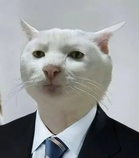

Длинношерстов Феликс Барсович
Образование
- Кошачья академия (КА), 2019г, Диплом по общей кошачьей образовательной программе
- Школа искусств мурловедения, 2020г, Курс по изучению искусства мурловедения
Навыки и качества
- Отличное здоровье и физическая форма
- Знание языка кошек на потрясающем уровне
- Опыт работы с игрушками и тренировкой
- Высокая самодисциплина и независимость
- Великолепные навыки ухода за шерстью
Прочая информация
- Участник кошачьего клуба "Виртуозные лапки"
- Победитель кошачьего шоу "Мур-да-Кот"